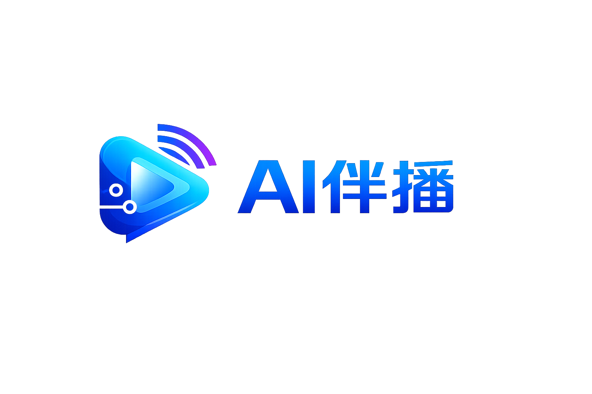

✦
AI 状态等待指令
随时准备响应

登录后才能访问桌面伴播工作台、Renderer 控制和云端授权能力。
OVERVIEW
语音识别、智能响应和直播动作已整合在一个简单的工作台中。
实时状态
随时准备响应
自动选择设备
正在准备动作服务
动作引擎
Desktop 正在自动准备 Renderer，无需手动打开浏览器。
快速操作
本次运行
点击“开始伴播”，让 AI 开始聆听直播指令。
设备状态
实时内容
尚未收到语音内容
打开后，请在直播伴侣的“窗口”素材中选择 AI Live Renderer。
输出设置
直播伴侣接入
相似度建议初始值 350～450，平滑度建议初始值 60～100；不同直播伴侣版本的范围可能不同。
查看底层运行数据、适配器状态和诊断信息。普通使用无需开启。